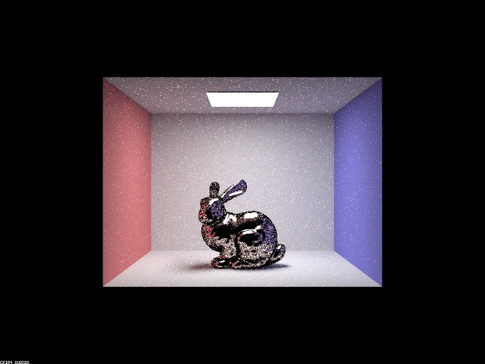

Overview
We did parts 1,2,3, though 2 was more of an after thought so we could make cooler renders, so parts 1 and 3 are the parts we want to be graded.
In this project we add upon our pathtracing system we implemented in 3-1. We used the staff solution for 3-1 to build upon because we ran into some problems trying to integrate our old solution, and figured we should just save our time so we could do more of the project. With the ideas for our final project in mind, we decided to do the reflection/refraction and glass material section, as well as the environment lighting section. The microfacet part was done since we had extra time.
Reflection/refraction is handled with ray manipulations just like diffuse light bounces, but now they can only reflect across the normal, and refract according to the material using snell's law. Glass-like material is implemented by noting that light can both reflect and refract upon incidence with the material. Whether a given ray reflects or refracts is decided probabilistically by Schlick's approximation.
Microfacets take into account a material's surface texture when deciding how diffuse or reflective the material is. Parameterizing the "roughness" of the material with a variable alpha, we can then calculate how a ray reflects off the surface. The material has a wavelength dependent Fresnel term, allowing for the material to have a color, as well as being able to reflect light from its surroundings. The implementation was rather straightforward as most of the theory is covered in the spec and the actual code is just writing the formulas using the variables of the implementation.
Environment lighting allows for more complicated lighting sources from the environment. The environment is defined such that the light can be assumed to be coming from an infinite distance away, and that it comes in radially. By loading in different .exr files, we can put our figures inside of different environments, and have them illuminated. In order to complete importance sampling for the part, a computational inversion solution is found for the pdf of the exr file, and a naive solution can take a few minutes to find. By ordering loops and caching certain results with a bit of thought, we were able to get it to find the inversion solution in around a second (funnily enough the optimization also solved some of our visual bugs).
* NOTE: For this project, you will choose TWO out of the four given parts to complete. One of those parts must be Part 1 or Part 2. In other words, you can choose any combination of two parts except the pair (Part 3, Part 4).
Part 1. Mirror and Glass Materials
Show a sequence of six images of scene `CBspheres.dae` rendered with `max_ray_depth` set to 0, 1, 2, 3, 4, 5, and 100. The other settings should be at least 64 samples per pixel and 4 samples per light. Make sure to include all screenshots.
|
|
|
|
|
|
|
|
|
|
|
Point out the new multibounce effects that appear in each image. Explain how these bounce numbers relate to the particular effects that appear. Make sure to include all screenshots.
Similar to before we implemented reflection/refraction, allowing for more bounces of light "m" which gives new lighting effects. At m=0, only light directly from the light source is visible, and at m=1 the scene becomes visible, but the spheres are black. Since light can now bounce off the objects once before we see it, we can see the walls and the reflection of the lights in the spheres. Note that the glass sphere has a less clear reflection.
The reflection effects only become visible at m=2 because we need to trace from the sphere to a wall and finally to a light before a reflection can be seen. Note that the glass sphere has a darker reflection, but no refractive effects.
At m=3 we can see refractive effects in the glass sphere, and more lighting effects are visible within the reflections of the mirror sphere. Refraction requires a bounce inside the sphere since it is technically "bounced" when it changes mediums, so it must "bounce" on both entering and exiting the surface of the sphere. Another notable refractive effect is the focusing of light in the shadow of the glass sphere from the primary light source. The ceiling and glass reflection effects are now visible (effects visible from m=2) because the reflection requires an extra bounce to see the same effects.
At m=4 the mirror sphere now shows the refraction through the glass sphere, and another refractive focusing of light from the mirror reflection of the primary light can be seen on the right wall.
At m=5 no new notable effects are visible, but the scene is somewhat brighter, especially the glass sphere in the mirror sphere's reflection. This is because light reflecting from the refractive focusing of the primary light is bouncing back into the glass sphere, illuminating it from the other side.
Finally at m=100, we see a similar brightening of the scene, especially the lighting on the glass sphere near the primary light. This is from light highlights on the ceiling which originate from the glass refractions bouncing the primary light on the ground which bounced back to the ceiling as secondary lighting.
Part 2. Microfacet Material
Show a screenshot sequence of 4 images of scene `CBdragon_microfacet_au.dae` rendered with $\alpha$ set to 0.005, 0.05, 0.25 and 0.5. The other settings should be at least 128 samples per pixel and 1 samples per light. The number of bounces should be at least 5. Describe the differences between different images. Note that, to change the $\alpha$, just open the .dae file and search for `microfacet`.
|
|
|
|
|
|
Alpha can be considered as a sort of "roughness" value of the material, so a material with lower alpha is smoother, and thus more mirror-like. The lower alpha value dragons only reflect light that is directly mirrored which leads to sharper reflections in the material. As the alpha increases, the reflections become a bit more blurry, and the specularity spots grow larger. At the larger alphas the material has some very rough reflections, but the amount of light it receives is more important to its appearance, and the color of the material is much more obvious.
Show two images of scene `CBbunny_microfacet_cu.dae` rendered using cosine hemisphere sampling (default) and your importance sampling. The sampling rate should be fixed at 64 samples per pixel and 1 samples per light. The number of bounces should be at least 5. Briefly discuss their difference.
|

|
|
The render that used cosine hemisphere sampling is much noisier, especially around regions that aren't well exposed to the light. This is because samples are much less likely to be drawn to the light, and if no samples are drawn the pixel is black. Meanwhile the importance sampling render doesn't have the grainy black pixels in these regions because the lighting source is always sampled.
Show at least one image with some other conductor material, replacing `eta` and `k`. Note that you should look up values for real data rather than modifying them arbitrarily. Tell us what kind of material your parameters correspond to.
|
|
We changed the conductor to Indium, a material often used for touchscreens. The $\eta, k$ values used are shown below.
| Color: | $(\eta,k)$: |
| Red: | $(1.2163 , 5.4114)$ |
| Green: | $(1.0533 , 4.9434)$ |
| Blue: | $(0.81408,4.3075)$ |
Part 3. Environment Light
Pick one *.exr* file to use for all subparts here. Include a converted *.jpg* of it in your website so we know what map you are using.

|
In a few sentences, explain the ideas behind environment lighting (i.e. why we do it/how it works).
Environment lighting adds the ability for a scene to be illuminated by an environment. The environment light is considered to come from infinitely far away, so we can assume the light comes in radially. By loading in different .exr files, we can put our figures inside of different environments, and have them illuminated by any custom environment. This is useful for adding complicated backgrounds to models that have been created without having to explicitly define the lighting and their geometry.
Show the *probability_debug.png* file for the *.exr* file you are using, generated using the `save_probability_debug()` helper function after initializing your probability distributions.
|
|
Use the `bunny_unlit.dae` scene and your environment map *.exr* file and render two pictures, one with uniform sampling and one with importance sampling. Use 4 samples per pixel and 64 samples per light in each. Compare noise levels. Make sure to include all screenshots.
|
|
|
The scene with importance sampling has a smoother texture and lighting. The uniform sampling is grainier, though besides that the shadows and lighting is correct.
Use a different image (if you did part 2, we recommend `bunny_microfacet_cu_unlit.dae`) and your environment map *.exr* file and render two pictures, one with uniform sampling and one with importance sampling. Use 4 samples per pixel and 64 samples per light in each. Compare noise levels. Make sure to include all screenshots.
|
|
|
Similar to the non-microfacet image, the scene with importance sampling is smoother and softer. With the importance sampling, the reflections of the environment on the figure are much more apparent, though it is still somewhat grainy and could use more samples. The difference between sampling methods is more obvious here, where the black pixels are more contrasted against the bright reflections of the microfacet material.
Part 4. Depth of Field (Not completed)
Partner Collaboration
Similar to our last project, we were able to meet up at a library a few times a complete most of the code together. Some minor/tedious debugging was done solo at home, and the writeup was done remotely as well, but most of the code was done via pair programming. This worked pretty well and we got the two parts we wanted done in a couple sessions, so we decided to do a third for the heck of it. From the project we learned how we can play with rays to simulate physical phenomena such as with glass, or with environment lighting, as well as how to computationally solve the inversion of a function and use it for importance sampling.